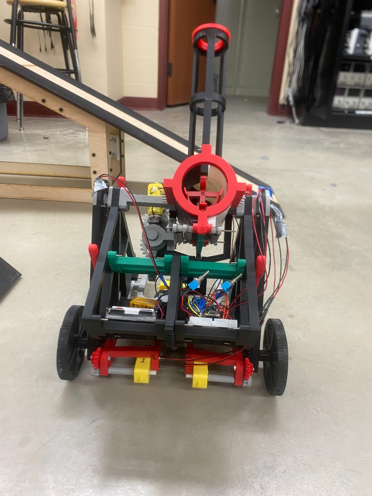
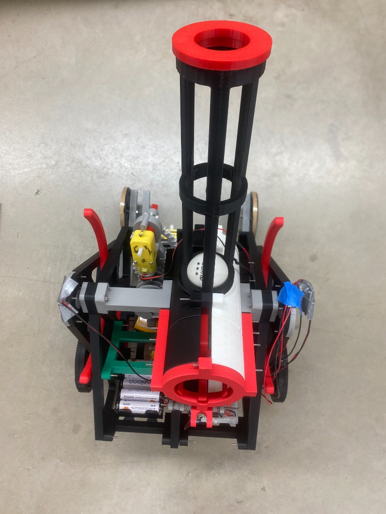
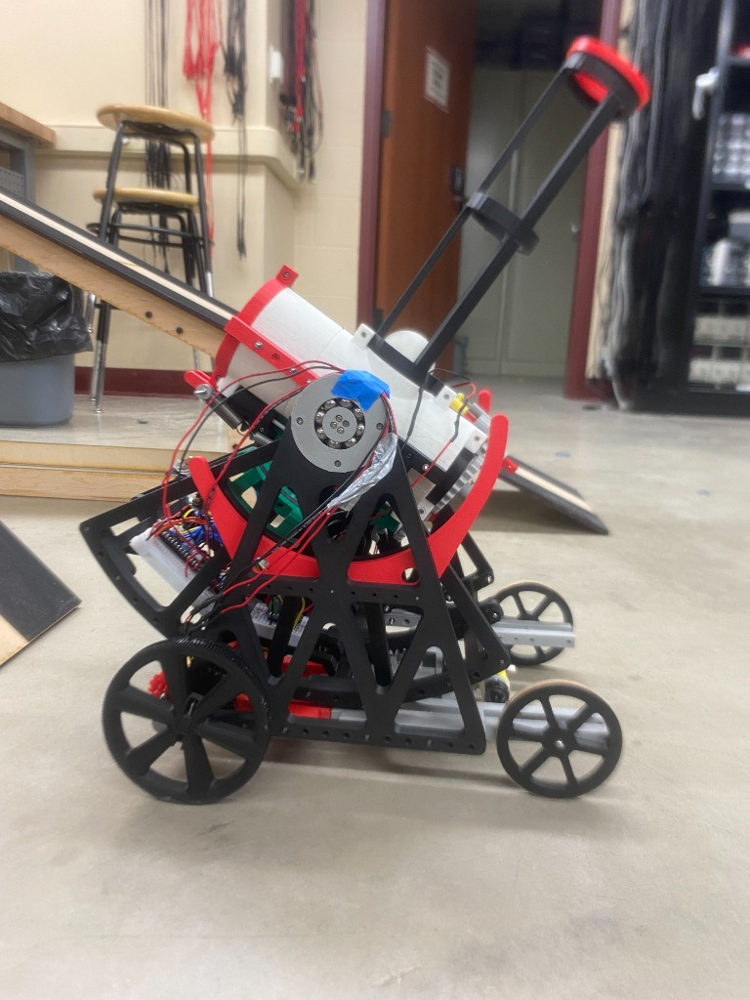
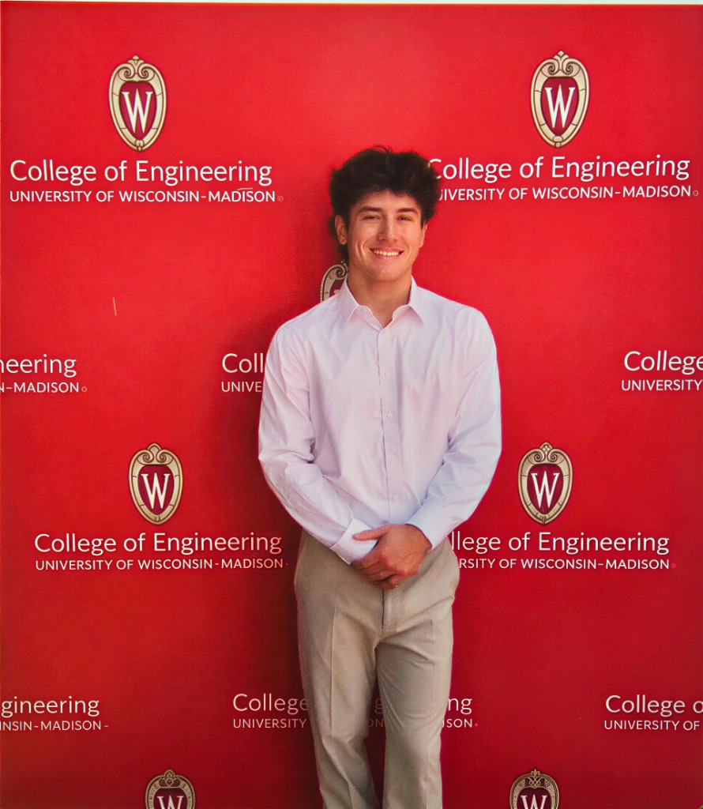

UW–Madison · B.S. Mechanical Engineering · Class of 2030
Engineering systems where physics, hardware, and computation have to agree.
I build working models of nuclear transients, embedded vehicle controls, and thermal energy systems — then verify them against theory. Interested in nuclear propulsion, thermal architectures, and the energy sector at organizations that treat engineering as a mission.
01 / Mission domains
Technical Focus
Embedded Systems
Bridging hardware and software with microcontrollers to drive actuators, process sensor data, and control dynamic mechanical systems.
Nuclear Propulsion
Exploring reactor kinetics, thermal-hydraulic limits, and control strategies for high-thrust, high-efficiency space and marine applications.
Thermal Systems
Designing and modeling architectures for heat transfer, fluid dynamics, and thermodynamic cycles in demanding environments.
Energy Sector
Developing technical solutions and data-driven insights to improve the efficiency, safety, and scalability of modern power generation.
02 / Selected work
Engineering Projects
Transient Nuclear Reactor Xe-135 Simulator
A live web-based simulator modeling Xenon-135 poisoning dynamics in a thermal reactor. It solves differential rate equations in real-time to demonstrate spatial oscillations and the 'Xenon pit' phenomenon during power transients.
ESP32 Wheeled Vehicle & Hardware Controls
Autonomous wheeled platform: C++ motor drive and speed control on an Arduino Nano ESP32, with SolidWorks chassis, drivetrain, and motor brackets held to print-ready tolerances. Designed custom signal processing for sensor integration.



Moving Target Launcher & Trajectory Calculator
Engineered an automated pneumatic launcher system capable of tracking and striking moving targets. Developed kinematic models to predict trajectories, integrating sensor feedback with an Arduino microcontroller to adjust pitch and yaw dynamically.
Nuclear Systems Analytics (NucInfo)
A comprehensive dashboard presenting operational data, thermodynamic cycle efficiencies, and safety metrics for various reactor designs. Built to aggregate technical specifications and communicate complex energy concepts effectively.
ME Connect Student Engineering Platform
A centralized hub developed for mechanical engineering students to discover project teams, access academic resources, and network with peers. Designed with a robust architecture to handle expanding user bases and varied content types.
03 / Capabilities
Tools I use to close the loop
CAD & Simulation
SolidWorks for precision part modeling and assembly design; Ansys for thermal and structural finite element analysis.
Hardware & Electronics
Arduino, ESP32, circuit design, sensor integration, and high-frequency data acquisition for physical testing.
Fabrication
Rapid prototyping via FDM/SLA 3D printing, manual machining (mill/lathe), and iterative physical assembly.
Computation
C/C++ for embedded logic, Python and MATLAB for data analysis and numerical modeling, JavaScript for interactive tooling.
04 / Profile
Cohen Bryant

I am a Mechanical Engineering student at the University of Wisconsin–Madison with a driving interest in systems that push the boundaries of energy density, thermal limits, and precise control.
My approach to engineering is grounded in building real hardware to validate theoretical models. Whether I'm programming an ESP32 to dictate vehicle dynamics or simulating reactor kinetics in software, I look for the intersections where physical mechanics and computational intelligence meet.
Outside of the classroom, I contribute to competitive engineering teams including Liquid Rocketry and Formula SAE, where I focus on CAD, fabrication, and integrating sub-systems under strict performance requirements. I am actively seeking opportunities in the aerospace, defense, and advanced energy sectors where rigorous engineering is the standard.
Aug 2026 – Present
AIAA · Liquid Rocketry · Formula SAE
CAD, subsystem fabrication, and test-rig setup with upperclassmen engineers on competition builds.
Sep 2026 – Present
University of Wisconsin–Madison
B.S. Mechanical Engineering. Coursework: Calculus II/III, Statics, Engineering Design, SolidWorks, Python/MATLAB.